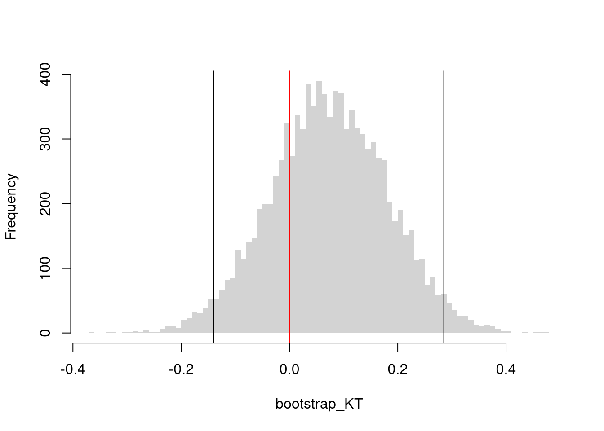

All of the univariate statistics we have covered apply to marginal distributions. For joint distributions, there are several ways to statistically describe the relationship between two variables. The major differences surround whether the data are cardinal or an ordered/unordered factor.
10.1 Statistics of Association
Two Cardinals.
Pearson (Linear) Correlation. Suppose you have two vectors, \(\hat{X}\) and \(\hat{Y}\), that are both cardinal data. As such, you can compute the most famous measure of association, the covariance. Letting \(\hat{M}_{X}\) and \(\hat{M}_{Y}\) denote the mean of \(\hat{X}\) and \(\hat{Y}\), we have \[\begin{eqnarray}
\hat{C}_{XY} = \sum_{i=1}^{n} [\hat{X}_{i} - \hat{M}_{X}] [\hat{Y}_i - \hat{M}_{Y}] / n
\end{eqnarray}\]
Note that covariance of \(\hat{X}\) and \(\hat{X}\) is just the variance of \(\hat{X}\); \(\hat{C}_{XX}=\hat{V}_{X}\), and recall that the standard deviation is \(\hat{S}_{X}=\sqrt{\hat{V}_X}\). For ease of interpretation and comparison, we rescale the correlation statistic to always lay on a scale \(-1\) and \(+1\). A value close to \(-1\) suggests negative association, a value close to \(0\) suggests no association, and a value close to \(+1\) suggests positive association. \[\begin{eqnarray}
\hat{R}_{XY} = \frac{ \hat{C}_{XY} }{ \hat{S}_{X} \hat{S}_{Y}}
\end{eqnarray}\]
Note
If \(\hat{X}=\left(0,1,2,3\right)\) and \(\hat{Y}=\left(0.1, 0.3, 0.2, 0.4\right)\), what is the correlation? Find the answer both mathematically and computationally.
Mathematically, there are five steps.
Step 1: Compute the means \[\begin{eqnarray}
\hat{M}_{X} &=& \frac{0+1+2}{3} = 1 \\
\hat{M}_{Y} &=& \frac{0.1+0.3+0.2}{3} = 0.2
\end{eqnarray}\]
Falk Codeviance. The Codeviance, \(\tilde{C}_{XY}\), is a robust alternative to Covariance. Instead of relying on means (which can be sensitive to outliers), it uses medians.1 We can also scale the Codeviance by the median absolute deviation to compute the median correlation, which typically lies in \([-1,1]\) but not always. Letting \(\tilde{M}_{X}\) and \(\tilde{M}_{Y}\) denote the median of \(\hat{X}\) and \(\hat{Y}\), we have \[\begin{eqnarray}
\tilde{C}_{XY} = \text{Med}\left\{ |\hat{X}_{i} - \tilde{M}_{X}| |\hat{Y}_i - \tilde{M}_{Y}| \right\} \\
\tilde{R}_{XY} = \frac{ \tilde{C}_{XY} }{ \hat{\text{MAD}}_{X} \hat{\text{MAD}}_{Y}}.
\end{eqnarray}\]
Code
codev <-function(xy) {# Compute medians for each column med <-apply(xy, 2, median)# Subtract the medians from each column xm <-sweep(xy, 2, med, "-")# Compute CoDev CoDev <-median(xm[, 1] * xm[, 2])# Compute the medians of absolute deviation MadProd <-prod( apply(abs(xm), 2, median) )# Return the robust correlation measurereturn( CoDev / MadProd)}codev(xy)## [1] 0.005707763
Two Ordered Factors.
Suppose now that \(\hat{X}\) and \(\hat{Y}\) are both ordered variables. Kendall’s rank correlation coefficient measures the strength and direction of association by counting the number of concordant pairs (where the ranks agree) versus discordant pairs (where the ranks disagree). A value closer to \(1\) suggests positive association in rankings, a value closer to \(-1\) suggests a negative association, and a value of \(0\) suggests no association in the ordering. \[\begin{eqnarray}
\hat{KT} = \frac{2}{n(n-1)} \sum_{i} \sum_{j > i} \text{sgn} \Bigl( (\hat{X}_{i} - \hat{X}_{j})(\hat{Y}_i - \hat{Y}_j) \Bigr),
\end{eqnarray}\] where the sign function is: \[\begin{eqnarray}
\text{sgn}(z) =
\begin{cases}
+1 & \text{if } z > 0\\
0 & \text{if } z = 0 \\
-1 & \text{if } z < 0
\end{cases}.
\end{eqnarray}\]
Kendall’s rank correlation coefficient can also be used for non-linear relationships, where Pearson’s correlation coefficient often falls short. It almost always helps to visual your data first before summarizing it with a statistic.
Two Unordered Factors.
Suppose \(\hat{X}\) and \(\hat{Y}\) are both categorical variables; the value of \(\hat{X}\) is one of \(1...K\) categories and the value of \(\hat{Y}\) is one of \(1...J\) categories. We organize such data as a contingency table with \(K\) rows and \(J\) columns and use Cramer’s V to quantify the strength of association by adjusting a chi-squared statistic to provide a measure that ranges from \(0\) to \(1\); \(0\) suggests no association while a value closer to \(1\) suggests a strong association.
\(\hat{O}_{kj}\) denote the observed frequency in cell \((k, j)\),
\(\hat{E}_{kj} = \hat{RF}_{k} \cdot \hat{CF}_j / n\) is the expected frequency for each cell if \(\hat{X}\) and \(\hat{Y}\) are independent
\(\hat{RF}_{k}\) denotes the total frequency for row \(k\) (i.e., \(\hat{RF}_i = \sum_{j=1}^{J} \hat{O}_{kj}\)),
\(\hat{CF}_{j}\) denotes the total frequency for column \(j\) (i.e., \(\hat{CF}_{j} = \sum_{k=1}^{K} \hat{O}_{kj}\)),
Second, normalize the chi-square statistic with the sample size and the degrees of freedom to compute Cramer’s V. Recalling that \(I\) is the number of categories for \(\hat{X}\), and \(J\) is the number of categories for \(\hat{Y}\), the statistic is \[\begin{eqnarray}
\hat{CV} = \sqrt{\frac{\hat{\chi}^2 / n}{\min(J - 1, \, K - 1)}}.
\end{eqnarray}\]
Code
xy <- USArrests[,c('Murder','UrbanPop')]xy[,1] <-cut(xy[,1],3)xy[,2] <-cut(xy[,2],4)table(xy)## UrbanPop## Murder (31.9,46.8] (46.8,61.5] (61.5,76.2] (76.2,91.1]## (0.783,6.33] 4 5 8 5## (6.33,11.9] 0 4 7 6## (11.9,17.4] 2 4 2 3CV <-function(xy){# Create a contingency table from the categorical variables tbl <-table(xy)# Compute the chi-square statistic (without Yates' continuity correction) chi2 <-chisq.test(tbl, correct=FALSE)[['statistic']]# Total sample size n <-sum(tbl)# Compute the minimum degrees of freedom (min(rows-1, columns-1)) df_min <-min(nrow(tbl) -1, ncol(tbl) -1)# Calculate Cramer's V V <-sqrt((chi2 / n) / df_min)return(V)}CV(xy)## X-squared ## 0.2307071# DescTools::CramerV( table(xy) )
Hypothesis Testing.
You can conduct hypothesis tests for these statistics using the same procedures we learned for univariate data. For example, by inverting a confidence interval.
Note
Code
xy <- USArrests[,c('Murder','UrbanPop')]xy_cor <-cor(xy[, 1], xy[, 2])# Bootstrap Distribution of Kendall Correlationn <-nrow(xy)bootstrap_cor <-vector(length=9999)for(b inseq(bootstrap_cor) ){ xy_b <- xy[sample(n, replace=T),] xy_cor_b <-cor(xy_b[, 1], xy_b[, 2], method="kendall") bootstrap_cor[b] <- xy_cor_b}hist(bootstrap_cor, breaks=100,border=NA, font.main=1,main='')## Test whether correlation is statistically different from 0boot_ci <-quantile(bootstrap_cor, probs=c(0.025, 0.975))abline(v=boot_ci)abline(v=0, col='red')

Tip
Test whether Kendal’s correlation statistic is statistically different from \(0\).
For mixed data, \(\hat{Y}_{i}\) is a cardinal variable and \(\hat{X}_{i}\) is a factor variable (typically unordered). For such data, we analyze associations via group comparisons. The basic idea is seen in a comparison of two samples, which corresponds to an \(\hat{X}_{i}\) with two categories.
Suppose we have two samples of data. For example, the heights of men and women in Canada. For another example, homicide rates in two different American states. For another example, the wages for people with and without completing a degree.
There may be several differences between these samples. Often, the first summary statistic we investigate is the difference in means.
Mean Differences.
We often want to know if the means of different sample are different in . To test this hypothesis, we compute the means separately for each sample and then examine the differences term \[\begin{eqnarray}
\hat{D} = \hat{M}_{X1} - \hat{M}_{X2},
\end{eqnarray}\] with a null hypothesis of \(D=0\).
Just as with one sample tests, we can compute a standardized differences, where \(D\) is converted into a \(t\) statistic. Note, however, that we have to compute the standard error for the difference statistic, which is a bit more complicated. However, this allows us to easily conduct one or two sided hypothesis tests using a standard normal approximation.
The above procedure generalized from differences in means to other quantiles statistics like medians.
Code
# Bootstrap Distribution Functionboot_fun <-function( fun, B=9999, ...){ bootstrap_diff <-vector(length=B)for(b inseq(bootstrap_diff)){ x1_b <-sample(x1, replace=T) x2_b <-sample(x2, replace=T) f1_b <-fun(x1_b, ...) f2_b <-fun(x2_b, ...) d_b <- f1_b - f2_b bootstrap_diff[b] <- d_b }return(bootstrap_diff)}# 2-Sided Test for Median Differences# d <- median(x2) - median(x1)boot_d <-boot_fun(median)hist(boot_d, border=NA, font.main=1,main='Difference in Medians')abline(v=quantile(boot_d, probs=c(.025, .975)), lwd=2)abline(v=0, lwd=2, col=2)
Code
1-ecdf(boot_d)(0)## [1] 0.00010001
If we want to test for the differences in medians across groups with independent observations, we can also use notches in the boxplot. If the notches of two boxes do not overlap, then there is rough evidence that the difference in medians is statistically significant. The square root of the sample size is also shown as the bin width in each boxplot.2
Code
boxplot(x1, x2,col=c(2,4),notch=T,varwidth=T)
We can also examine whether there are differences in spread or shape statistics such as sd and IQR, or skew and kurtosis.
Tip
Note that such approaches suffer from a finite-sample bias, which we can correct for. Also note that bootstrap tests can perform poorly with highly unequal variances or skewed data. To see this yourself, make a simulation with skewed data and unequal variances.
Code
# 2-Sided Test for SD Differences#d <- sd(x2) - sd(x1)boot_d <-boot_fun(sd)hist(boot_d, border=NA, font.main=1,main='Difference in Standard Deviations')abline(v=quantile(boot_d, probs=c(.025, .975)), lwd=2)abline(v=0, lwd=2, col=2)1-ecdf(boot_d)(0)# Try any function!# boot_fun( function(xs) { IQR(xs)/median(xs) } )
Distributional Comparisons.
We can also examine whether there are any differences between the entire distributions
The starting point for hypothesis testing is the Kolmogorov-Smirnov Statistic: the maximum absolute difference between two CDF’s over all sample data \(x \in \{X_1\} \cup \{X_2\}\). \[\begin{eqnarray}
\hat{KS} &=& \max_{x} |\hat{F}_{1}(x)- \hat{F}_{2}(x)|^{p},
\end{eqnarray}\] where \(p\) is an integer (typically 1). An intuitive alternative is the Cramer-von Mises Statistic: the sum of absolute differences (raised to an integer, typically 2) between two CDF’s. \[\begin{eqnarray}
\hat{CVM} &=& \sum_{x} | \hat{F}_{1}(x)- \hat{F}_{2}(x)|^{p}.
\end{eqnarray}\]
Just as before, you use bootstrapping for hypothesis testing.
Code
twosamples::cvm_test(x1, x2)## Test Stat P-Value ## 2.084253 0.087000
Comparing Multiple Groups.
For multiple groups, we can tests the equality of all distributions (whether at least one group is different). The Kruskal-Wallis test examines \(H_0:\; F_1 = F_2 = \dots = F_G\) versus \(H_A:\; \text{at least one } F_g \text{ differs}\), where \(F_g\) is the continuous distribution of group \(g=1,...G\). This test does not tell us which group is different.
To conduct the test, first denote individuals \(i=1,...n\) with overall ranks \(\hat{r}_1,....\hat{r}_{n}\). Each individual belongs to group \(g=1,...G\), and each group \(g\) has \(n_{g}\) individuals with average rank \(\bar{r}_{g} = \sum_{i} \hat{r}_{i} /n_{g}\). The Kruskal Wallis statistic is \[\begin{eqnarray}
\hat{KW} &=& (N-1) \frac{\sum_{g=1}^{G} n_{g}( \bar{r}_{g} - \bar{r} )^2 }{\sum_{i=1}^{n} ( \hat{r}_{i} - \bar{r} )^2},
\end{eqnarray}\] where \(\bar{r} = \frac{n+1}{2}\) is the grand mean rank.
In the special case with only two groups, \(G=2\), the Kruskal Wallis test reduces to the Mann–Whitney U test (also known as the Wilcoxon rank-sum test). In this case, we can write the hypotheses in terms of individual outcomes in each group, \(Y_i\) in one group \(Y_j\) in the other; \(H_0: Prob(Y_i > Y_j)=Prob(Y_i > Y_i)\) versus \(H_A: Prob(Y_i > Y_j) \neq Prob(Y_i > Y_j)\). The corresponding test statistic is \[\begin{eqnarray}
\hat{U} &=& \min(\hat{U}_1, \hat{U}_2) \\
\hat{U}_g &=& \sum_{i\in g}\sum_{j\in -g}
\Bigl[\mathbf 1( \hat{Y}_{i} > \hat{Y}_{j}) + \tfrac12\mathbf 1(\hat{Y}_{i} = \hat{Y}_{j})\Bigr].
\end{eqnarray}\]
Code
library(AER)data(CASchools)CASchools$stratio <- CASchools$students/CASchools$teachers# Do student/teacher ratio differ for at least 1 county?# Single test of multiple distributionskruskal.test(CASchools$stratio, CASchools$county)## ## Kruskal-Wallis rank sum test## ## data: CASchools$stratio and CASchools$county## Kruskal-Wallis chi-squared = 161.18, df = 44, p-value = 2.831e-15# Multiple pairwise tests# pairwise.wilcox.test(CASchools$stratio, CASchools$county)
10.3 Probability Theory
We will now dig a little deeper theoretically into the statistics we compute. When we know how the data are generated theoretically, we can often compute the theoretical value of the most basic and often-used bivariate statistic: the Pearson correlation. To see this, we focus on two discrete random variables, first showing their covariance, \(\mathbb{C}[X_{i}, Y_{i}]\), and then their correlation \(\mathbb{R}[X_{i}, Y_{i}]\); \[\begin{eqnarray}
\mathbb{C}[X_{i}, Y_{i}]
&=& \mathbb{E}[(X_{i} – \mathbb{E}[X_{i}])(Y_{i} – \mathbb{E}[Y_{i}])]
= \sum_{x}\sum_{y}
\mathbb{E}[(x – \mathbb{E}[X_{i}])(y – \mathbb{E}[Y_{i}])] Prob(X_{i} = x, Y_{i} = y)
\\
\mathbb{R}[X_{i}, Y_{i}] &=& \frac{\mathbb{C}[X_{i}, Y_{i}] }{ \mathbb{s}[X_{i}] \mathbb{s}[Y_{i}] }
\end{eqnarray}\]
For example, suppose we have discrete data with the following probabilities
x=0
x=1
x=2
y=0
0.0
0.1
0.0
y=10
0.1
0.3
0.1
y=20
0.1
0.1
0.2
After verifying that the probabilities sum to \(1\), we then compute the marginal distributions \[\begin{eqnarray}
Prob(X_{i}=0)=0.2,\quad Prob(X_{i}=1)=0.5,\quad Prob(X_{i}=2) = 0.3 \\
Prob(Y_{i}=0)=0.1,\quad Prob(Y_{i}=10)=0.5,\quad Prob(Y_{i}=20) = 0.4
\end{eqnarray}\] which allows us to compute the means: \[\begin{eqnarray}
\mathbb{E}[X_{i}] &=& 0(0.2)+1(0.5)+2(0.3) = 1.1 \\
\mathbb{E}[Y_{i}] &=& 0(0.1)+10(0.5)+20(0.4) = 13
\end{eqnarray}\] We can then compute the cell-by-cell contributions: \(Prob(X_{i} = x, Y_{i} = y) (x-\mathbb{E}[X_{i}])(y-\mathbb{E}[Y_{i}])\), \[\begin{eqnarray}
\begin{array}{l l r r r r r}
\hline
x & y & Prob(X_{i}=x, Y_{i}=y) & x-\mathbb{E}[X_{i}] & y-\mathbb{E}[Y_{i}] & (x-\mathbb{E}[X_{i}])(y-\mathbb{E}[Y_{i}]) & \text{Contribution}\\
\hline
0 & 0 & 0.0 & -1.1 & -13 & 14.3 & 0\\
0 & 10 & 0.1 & -1.1 & -3 & 3.3 & 0.330\\
0 & 20 & 0.1 & -1.1 & 7 & -7.7 & -0.770\\
1 & 0 & 0.1 & -0.1 & -13 & 1.3 & 0.130\\
1 & 10 & 0.3 & -0.1 & -3 & 0.3 & 0.090\\
1 & 20 & 0.1 & -0.1 & 7 & -0.7 & -0.070\\
2 & 0 & 0.0 & 0.9 & -13 & -11.7 & 0\\
2 & 10 & 0.1 & 0.9 & -3 & -2.7 & -0.270\\
2 & 20 & 0.2 & 0.9 & 7 & 6.3 & 1.260\\
\hline
\end{array}
\end{eqnarray}\] and plug them into the covariance \[\begin{eqnarray}
\mathbb{C}[X_{i},Y_{i}] &=& \sum_{x} \sum_{y} \left(x-\mathbb{E}[X_{i}]\right)\left(y-\mathbb{E}[Y_{i}]\right) Prob\left(X_{i} = x, Y_{i} = y\right) \\
&=& 0 + 0.330 -0.770 + 0.130 + 0.090 -0.070 +0 -0.270 + 1.260
= 0.7
\end{eqnarray}\]
To compute the correlation value, we first need the standard deviations \[\begin{eqnarray}
\mathbb{V}[X_{i}] &=& \sum_{x} (x-\mathbb{E}[X_{i}])^2 Prob(X_{i} = x) \\
&=& (0-1.1)^2(0.2)+(1-1.1)^2(0.5)+(2-1.1)^2(0.3)=0.49 \\
\mathbb{s}[X_{i}] &=& \sqrt{0.49} \\
\mathbb{V}[Y_{i}] &=& \sum_{y} (y-\mathbb{E}[Y_{i}])^2 Prob(Y_{i} = y) \\
&=& (0-13)^2(0.1)+(10-13)^2(0.5)+(20-13)^2(0.4)=41 \\
\mathbb{s}[Y_{i}] &=& \sqrt{41}.
\end{eqnarray}\] Then we can find the correlation as \[\begin{eqnarray}
\frac{\mathbb{C}[X_{i},Y_{i}]}{\mathbb{s}[X_{i}]\mathbb{s}[Y_{i}]}
&=& \frac{0.7}{\sqrt{0.49} \sqrt{41}} \approx 0.156,
\end{eqnarray}\] which suggests a weak positive association between the variables.
See also Theil-Sen Estimator, which may be seen as a precursor.↩︎
Let each group \(g\) have median \(\tilde{M}_{g}\), interquartile range \(\hat{IQR}_{g}\), observations \(n_{g}\). We can compute standard deviation of the median as \(\tilde{S}_{g}= \frac{1.25 \hat{IQR}_{g}}{1.35 \sqrt{n_{g}}}\). As a rough guess, the interval \(\tilde{M}_{g} \pm 1.7 \tilde{S}_{g}\) is the historical default and displayed as a notch in the boxplot. See also https://www.tandfonline.com/doi/abs/10.1080/00031305.1978.10479236.↩︎